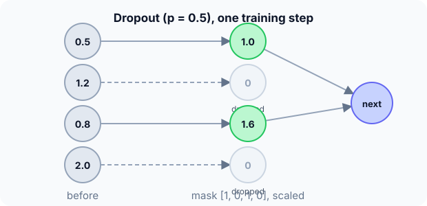

Prerequisites
- The MLP.
- Overfitting.
- Expected value: the average outcome of a random process.
The analogy
Everyday analogy
Imagine a football team where, in every practice match, a random half of the players sit out. Nobody can rely on one star teammate, so everyone learns to play well with whoever is on the pitch.
Dropout does that to neurons: random neurons sit out each training step, so the network learns redundant, robust features.
How it works
Inverted dropout: during training, keep each neuron with probability $1 - p$ and multiply the kept outputs by $1/(1 - p)$; at test time use all neurons unchanged.
Start with one mask by hand
Activations $a = [0.5, 1.2, 0.8, 2.0]$, drop rate $p = 0.5$, random mask $[1, 0, 1, 0]$ (1 = keep). Predict, then open "Check".
Example: predict before you read
Step 1. Apply the mask without scaling.
Check
$[0.5, 0, 0.8, 0]$: the sum dropped from 4.5 to 1.3.
Step 2. Cover the next line and guess: the scaling factor of inverted dropout, and the result.
Check
$1/(1 - 0.5) = 2$: $[1.0, 0, 1.6, 0]$.
Step 3. What does the layer output at test time?
Check
The original $[0.5, 1.2, 0.8, 2.0]$: no mask and no scaling.

Quick recall: Before reading further, cover the text above and say out loud: why are the kept activations multiplied by 2?
Check your answer
To keep the expected output the same as without dropout: each neuron is kept half the time, so doubling it gives the same average.
Finish the picture: the expected output
Take one neuron with activation $a = 1.2$ and $p = 0.5$.
- Possible outputs during training. Predict them and their probabilities.
Check
2.4 with probability 0.5 (kept, doubled) and 0 with probability 0.5 (dropped).
- Their average. Predict it.
Check
$0.5 \cdot 2.4 + 0.5 \cdot 0 = 1.2$: on average the next layer sees the same signal as at test time.
Quick recall: Without scrolling up, say out loud: what goes wrong if you forget to switch dropout off at test time?
Check your answer
Predictions become random from one run to the next, and the network performs worse because half its neurons are missing.
Full worked calculation
The layer output $a = [0.5, 1.2, 0.8, 2.0]$ through four training steps of dropout with rate $p = 0.5$ (four different random masks), then at test time. The goal: check that the scaling keeps the average signal unchanged.
| Step | Mask | Output (survivors × 2) | Sum of outputs |
|---|---|---|---|
| 1 | [1, 0, 1, 0] | [1.0, 0, 1.6, 0] | 2.6 |
| 2 | [0, 1, 1, 0] | [0, 2.4, 1.6, 0] | 4.0 |
| 3 | [1, 1, 0, 1] | [1.0, 2.4, 0, 4.0] | 7.4 |
| 4 | [0, 0, 1, 1] | [0, 0, 1.6, 4.0] | 5.6 |
| Average | [0.5, 1.2, 1.2, 2.0] | 4.9 | |
| Test time | no mask | [0.5, 1.2, 0.8, 2.0] | 4.5 |
-
1Draw a mask
$$\text{mask}_i \sim \text{Bernoulli}(1 - p) = \text{Bernoulli}(0.5)$$Each neuron independently survives with probability 0.5. Step 1 keeps neurons 1 and 3. A new mask is drawn at every training step.
-
2Scale the survivors
$$\frac{1}{1 - p} = \frac{1}{0.5} = 2: \quad [0.5 \cdot 2,\; 0,\; 0.8 \cdot 2,\; 0] = [1.0,\; 0,\; 1.6,\; 0]$$Half the neurons are gone, so the next layer would receive about half the usual signal. Doubling the survivors compensates ("inverted dropout").
-
3Expected value of one output
$$\mathbb{E}[\tilde a_i] = 0.5 \cdot 2a_i + 0.5 \cdot 0 = a_i$$On average each output equals its original value. That is the whole point of the scaling: the next layer sees the same signal size in training and at test time.
-
4Check over four masks
$$\text{neuron 1: } \frac{1.0 + 0 + 1.0 + 0}{4} = 0.5 \;\checkmark, \qquad \text{neuron 3: } \frac{1.6 + 1.6 + 0 + 1.6}{4} = 1.2 \;(\text{expected } 0.8)$$Neuron 1 averages exactly right. Neuron 3 happened to survive 3 times out of 4, so its average is too high: with only four samples the randomness is visible. Over thousands of steps it averages out to 0.8.
-
5Each step trains a different sub-network
$$2^4 = 16 \text{ possible masks for 4 neurons}$$The sums 2.6, 4.0, 7.4, 5.6 show how different each step's network is. No neuron can rely on a specific partner always being present, so each must learn useful features on its own.
-
6Test time
$$\text{training} = 0 \;\Rightarrow\; \tilde a = a = [0.5,\; 1.2,\; 0.8,\; 2.0]$$At test time nothing is dropped and nothing is scaled. Because of the training-time scaling, these outputs already have the right size. It behaves like the average of all 16 sub-networks.
What the numbers tell us
Dropout zeroes each neuron with probability $p$ and multiplies the survivors by $1/(1 - p)$, so the expected output is unchanged.
It only acts during training. Forgetting to switch it off at test time (in PyTorch: model.eval()) makes predictions random.
The rule in plain words
During training: for each example and each neuron, drop it with probability $p$ and scale the survivors by $1/(1 - p)$. A fresh random mask every step.
At inference: use the full network, unchanged. Typical rates: 0.1–0.5 for dense layers.
Quick recall: Before you read the code, describe inverted dropout for one layer, in your own words. Then check below.
Check your answer
For each neuron, keep it with probability $1 - p$; set dropped ones to 0 and multiply kept ones by $1/(1 - p)$. At test time, skip all of this.
The code
Read this code after you have applied the mask by hand. It will make more sense.
void dropout(double a[], int mask[], int n, double p, int training) { /* inverted dropout */
if (!training) return; /* test time: use every neuron as is */
for (int i = 0; i < n; i++)
a[i] = mask[i] ? a[i] / (1 - p) : 0; /* mask[i] = 1 with probability 1 - p */
}Definition
What you just did, in one line: dropout randomly sets a fraction $p$ of a layer's outputs to zero at each training step (scaling the rest by $1/(1 - p)$), and uses all neurons at test time.
flowchart TD
A{"training or inference?"} -->|training| B["draw a random keep/drop mask"]
B --> C["zero dropped neurons, scale kept ones by 1/(1 - p)"]
A -->|inference| D["use all neurons unchanged"]
Putting numbers on it
Quick recall: Before looking at the formula, predict: what is the expected value of a neuron's output under inverted dropout?
Check your answer
Exactly its original value: $(1 - p) \cdot a/(1 - p) + p \cdot 0 = a$.
Inverted dropout keeps the expected activation unchanged:
$$\tilde a_i = \frac{m_i}{1 - p}\, a_i, \quad m_i \sim \text{Bernoulli}(1 - p), \qquad \mathbb{E}[\tilde a_i] = a_i$$| Neuron | Activation | Mask | Training output |
|---|---|---|---|
| 1 | 0.5 | 1 | 1.0 |
| 2 | 1.2 | 0 | 0 |
| 3 | 0.8 | 1 | 1.6 |
| 4 | 2.0 | 0 | 0 |
| Test time | any $a$ | — | $a$ (unchanged) |
Warning
Always switch the network to evaluation mode for validation and testing (in PyTorch, model.eval()). Forgetting it is one of the most common bugs: scores look noisy and worse than they should.
Exam tip
Explain the scaling: "inverted dropout divides by $1 - p$ during training so that nothing changes at test time". And name the effect: it reduces overfitting, like an ensemble of sub-networks.
Common mistakes
- Leaving dropout on at test time.
- Forgetting the $1/(1 - p)$ scaling, so the next layer sees smaller signals in training than at test time.
- Using a very high rate (e.g. 0.9) on small networks, which causes underfitting.
Try it yourself
Exercise 1 (warm-up)
Activations $[2, 4, 6]$, $p = 0.25$, mask $[1, 1, 0]$. Compute the training output.
Hint
Scale by $1/(1 - 0.25)$.
Answer
Factor $4/3$: $[2.67, 5.33, 0]$.
Exercise 2 (a bit harder)
A layer has 100 neurons and $p = 0.2$. On average how many are dropped per step, and how many different masks are possible? Write your answer down before you open it.
Show answer
About 20 dropped. There are $2^{100}$ possible masks, which is why dropout acts like training an enormous ensemble of thinned networks that share weights.
Did you know?
Did you know?
Hinton's group introduced dropout in 2012 and used it in AlexNet, the network that won ImageNet that year by a wide margin.
Hinton has said the idea was partly inspired by a bank, where tellers kept being moved around so that no group of employees could cooperate to commit fraud.
Key points to remember
If you remember one thing from each line, remember the because.
- Dropout reduces overfitting because neurons can't rely on specific partners and must learn robust features.
- Kept outputs are scaled by $1/(1 - p)$ because that keeps the expected signal equal to the test-time signal.
- A new mask is drawn every step because that trains many different thinned sub-networks.
- Nothing is dropped at test time because the full network approximates the average of all sub-networks.
- It acts like an ensemble because every mask is a different network sharing the same weights.
Self-check questions
Answer these in order, out loud. They follow the page, so your answers become the script of your video.
- How is dropout like a team where random players sit out each practice?
Sample answer
No one can rely on a single star teammate, so everyone learns to play well with whoever is on the pitch; neurons learn robust features the same way.
- Apply inverted dropout with $p = 0.5$ and mask [1, 0, 1, 0] to [0.5, 1.2, 0.8, 2.0].
Sample answer
$[1.0, 0, 1.6, 0]$: dropped neurons are 0, kept ones doubled.
- Why does the code return immediately when
trainingis 0?A good answer says what test time needs.
Sample answer
At test time the full network must be used unchanged; with inverted dropout no rescaling is needed, so the layer is simply passed through.
- So what is dropout, in one sentence?
Sample answer
A regularization technique that randomly zeroes a fraction of a layer's outputs at each training step and uses all of them at test time.
- Why is the expected output unchanged by inverted dropout?
A good answer computes $\mathbb{E}$ for one neuron.
Sample answer
A neuron outputs $a/(1 - p)$ with probability $1 - p$ and 0 otherwise, so its average is $a$.
- Which values of $p$ are typical?
Sample answer
0.1 to 0.5 for dense layers; lower (or none) for convolutional layers, which have fewer parameters per output.
- What is the most common dropout bug?
Sample answer
Forgetting to switch to evaluation mode, so dropout stays active during validation or deployment.
- If you had to teach this to a friend in 2 minutes, what would you leave out, and why?
Sample answer
I'd leave out the ensemble interpretation and the mask count. I'd keep the team analogy, the four-neuron mask example, and "drop randomly in training, scale by $1/(1 - p)$, never at test time".
External resources
- Srivastava et al.: Dropout (JMLR 2014): the full paper with experiments.
- PyTorch docs: nn.Dropout: inverted dropout and train/eval modes.
- Wikipedia: Dropout: overview and variants.
Videos
- YouTube search: dropout explained: pick a short explanation.